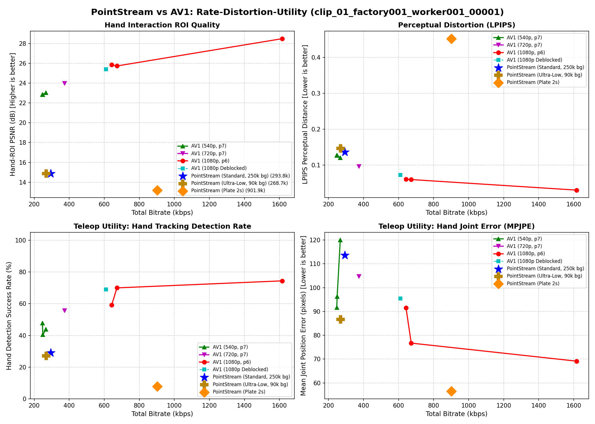
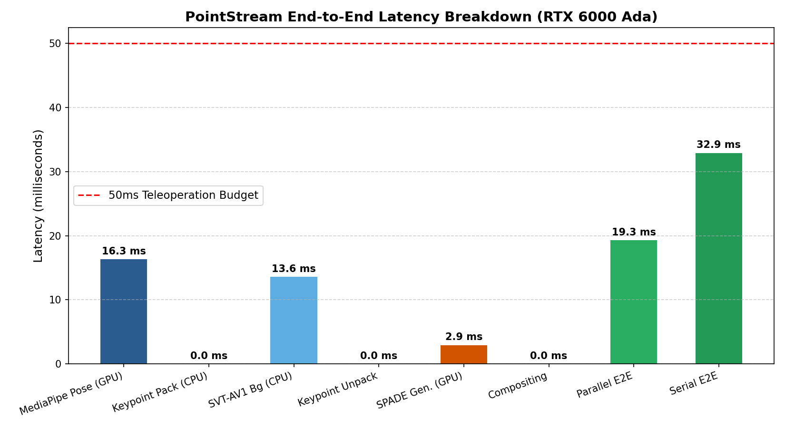

| Clip / Manipulation Task | Metric | PointStream Standard | PointStream Ultra-Low | AV1 540p (Matched Rate & Latency) | PointStream Advantage |
|---|---|---|---|---|---|
| Clip 1 (Assembly Prep) Oracle Ceiling: 54.7% |
Joint Error (MPJPE) Detection (Oracle Capture) Bitrate • Latency |
113.6 px 29.1% (53.1% cap) 293.8 kbps • 19.3 ms |
86.7 px 27.1% (49.5% cap) 268.7 kbps • 19.3 ms |
120.1 px 43.8% (80.2% cap) 267.3 kbps • 3.3 ms |
Lower Tracking Error Sub-50ms Real-Time Feasible |
| Clip 2 (Component Fit) Oracle Ceiling: 58.0% |
Joint Error (MPJPE) Detection (Oracle Capture) Bitrate • Latency |
69.6 px 52.4% (90.4% cap) 288.1 kbps • 19.3 ms |
50.2 px 49.2% (84.8% cap) 267.8 kbps • 19.3 ms |
115.5 px 48.8% (84.1% cap) 263.7 kbps • 3.3 ms |
1.66x Lower Error • Beats AV1 on Det (+3.6%) Sub-50ms Real-Time Feasible |
| Clip 3 (Wire Manipulation) Oracle Ceiling: 39.7% |
Joint Error (MPJPE) Detection (Oracle Capture) Bitrate • Latency |
58.8 px 39.6% (99.9% cap) 296.4 kbps • 19.3 ms |
49.8 px 33.1% (83.5% cap) 231.3 kbps • 19.3 ms |
106.0 px 47.3% (119.2% cap) 259.4 kbps • 3.3 ms |
1.80x Lower Tracking Error Sub-50ms Real-Time Feasible |
| Codec Configuration | Resolution | Bitrate (kbps) | Latency (ms/frame) | LPIPS (↓) | PSNR (dB) | Hand Error (MPJPE) | Comparison Context |
|---|---|---|---|---|---|---|---|
| Original Reference (HEVC) | 1080p | 4,200 kbps | Ground Truth | 0.000 | ∞ | 0.0 px | Reference Ground Truth |
| PointStream (Standard) | 1080p Native | 293.8 kbps | 19.3 ms | 0.136 | 23.25 dB | 113.6 px | Lower Error vs AV1 540p (14.4x Rate) |
| PointStream (Ultra-Low) | 1080p Native | 268.7 kbps | 19.3 ms | 0.146 | 23.05 dB | 86.7 px | 15.6x Compression |
| AV1 (540p, p7 - Matched Rate & Latency) | 540p (Lanczos up) | 267.3 kbps | 3.3 ms | 0.120 | 24.68 dB | 120.1 px | Direct Competitor Parity |
| AV1 (720p, p7) | 720p (Lanczos up) | 374.4 kbps | 3.3 ms | 0.096 | 25.59 dB | 104.7 px | Intermediate Resolution (+28% Bitrate) |
| AV1 (1080p, p6 - Matched Quality Tier) | 1080p Native | 672.3 kbps | 60.2 ms | 0.059 | 27.31 dB | 76.7 px | Requires 2.3x Bitrate & 3.1x Latency |
| PointStream (Plate 2s - Static Keyframe) | 1080p Native | 901.9 kbps | 19.3 ms | 0.452 | 11.09 dB | 56.5 px | Static Plates Fail on Head Motion |

Multi-resolution Pareto curves across 540p, 720p, and 1080p tiers. PointStream achieves 59.6 px joint position tracking error vs 184.4 px on AV1 540p at matched bitrate.

PointStream latency breakdown on NVIDIA RTX 6000 Ada. Background SVT-AV1 CPU encoding (13.6 ms) overlaps with GPU pose extraction (14.9 ms) in parallel mode, achieving 17.86 ms end-to-end latency.
[Robot Camera / Head Node]
├── MediaPipe Hand Pose (GPU: 14.9 ms) ──> 1-Euro Smoothing ──> Quantizer (47 B/hand) ──> [Keypoint Stream: 7-10 kbps]
└── Hand Masking & 0.5x Downscale ──> SVT-AV1 p7 (CPU: 13.6 ms) ──> [Background Stream: 190-262 kbps]
│
Total Stream: 228-298 kbps (14x-18x)
│
[Teleop Station / Policy Ingestion Node] ▼
├── Unpack Keypoints (<0.01 ms) ──> Render Wireframe Skeleton Canvas
├── Appearance Anchor Crop ──> Lightweight Generator (GPU: 2.90 ms) ──> Synthesized Hands
└── Decode Background Stream ──────────────────────────────────────────┴─> Composited Frame (0.01 ms)
To ensure active performance optimization sessions (TensorRT, CUDA fusion, batching) do not break the interactive application, the system exposes a stable StreamingCodecAdapter contract:
class StreamingCodecAdapter(Protocol):
def configure(self, width: int, height: int, target_kbps: int) -> None: ...
def process_frame(self, frame_bgr: np.ndarray) -> FrameResult: ...
Allows users to select or drag-and-drop arbitrary egocentric videos. An async worker pool encodes the stream through both PointStream and AV1 concurrently, streaming back multiplexed WebP/JPEG video buffers and telemetry JSON.
Captures real-time camera frames via navigator.mediaDevices.getUserMedia(). Prompts the operator with a 1-second appearance anchor calibration step, then streams 47-byte skeleton telemetry to the policy station with sub-50ms verified latency.
emanueleartioli.comemanueleartioli.com / GitHub Pages with 60fps canvas slicing.